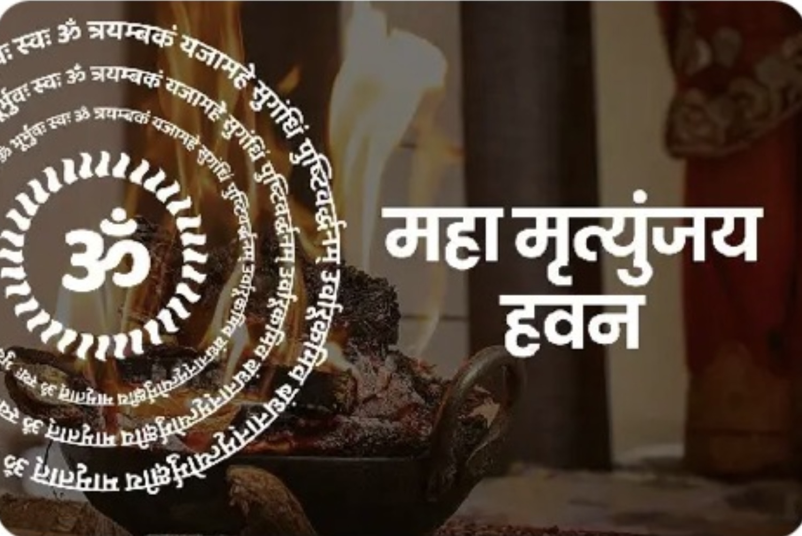
Vedic Puja & Ritual Services
Our Services

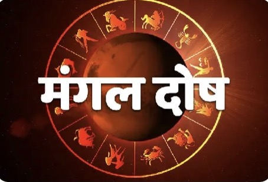
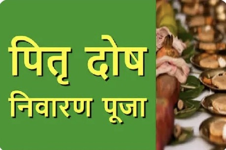
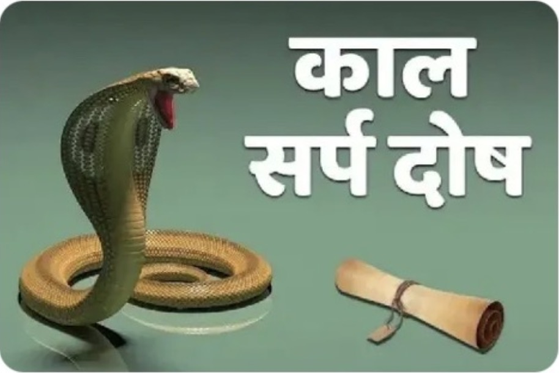
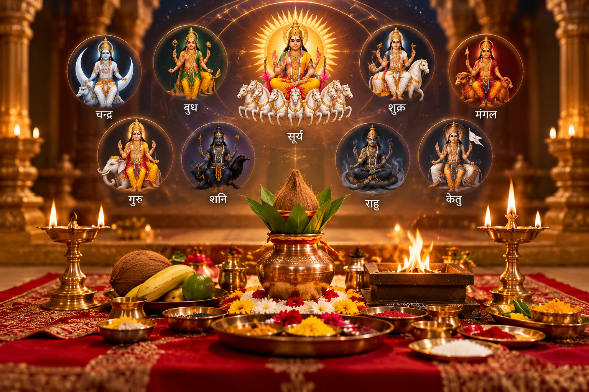
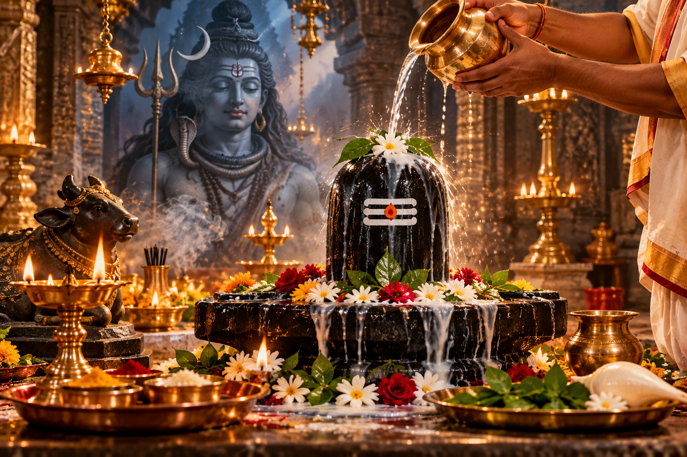
Pandit Dinesh Krishn Pradhan is a Bhagawatacharya based in Ujjain, Madhya Pradesh, with more than 15 years of experience in Vedic puja and traditional Hindu rituals. Puja services are available in Ujjain and selected cities, with online puja services available across India.
Online Puja
Participate in traditional Vedic puja from anywhere in India through a live video call with Pandit Ji.
You can participate in your chosen puja from the comfort of your home through a live video call. Pandit Ji performs the rituals according to traditional Vedic practices while you and your family participate remotely.
Live participation through video call
Puja samagri arranged by Pandit Ji
Available across India
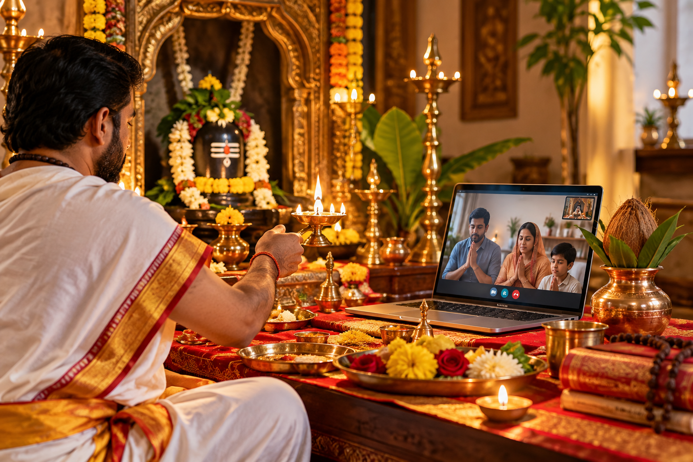
WHY CHOOSE US
Experience in Vedic Puja & Rituals
Traditional Vedic knowledge & practice
Traditional Vedic rituals performed with devotion
Live puja participation from anywhere in India
Available in Ujjain & selected cities
Required samagri arranged by Pandit Ji
Gallery
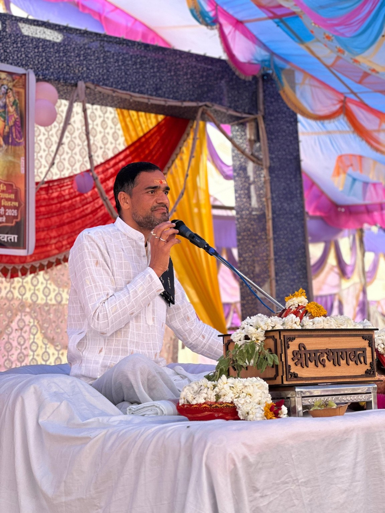
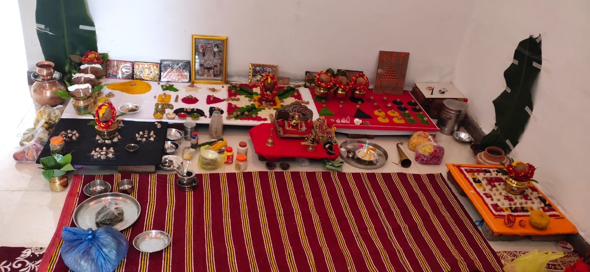
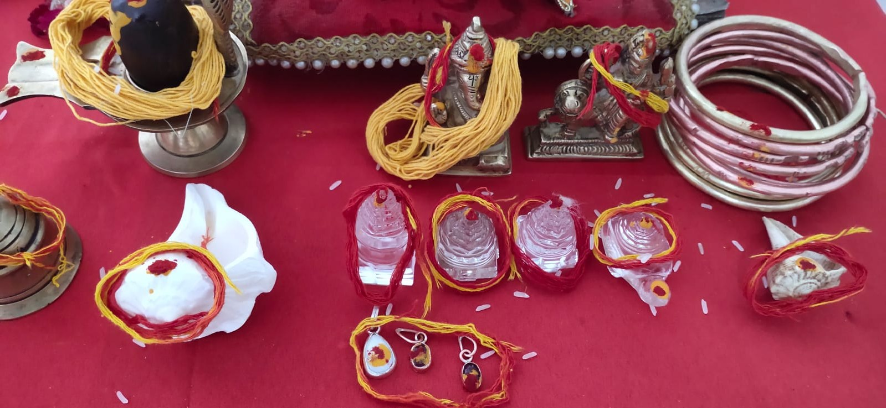
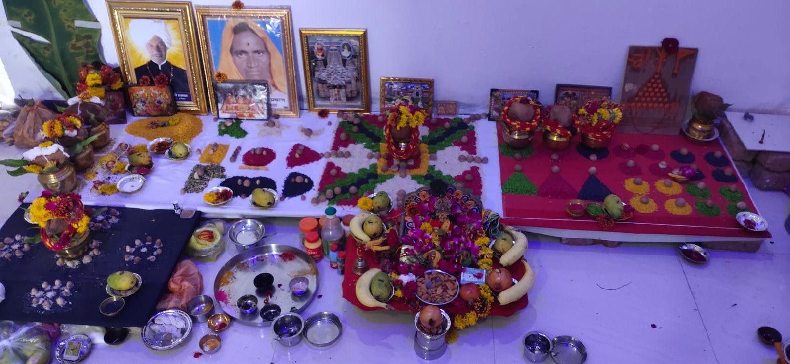
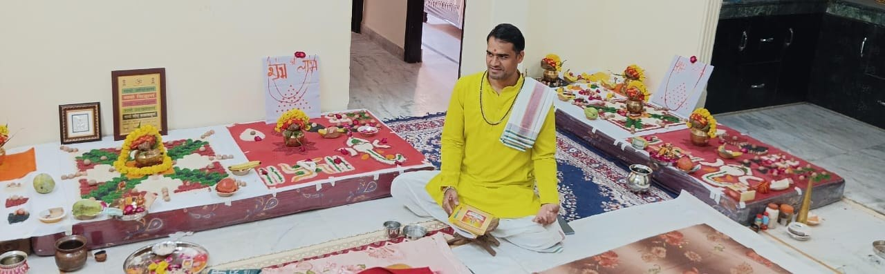
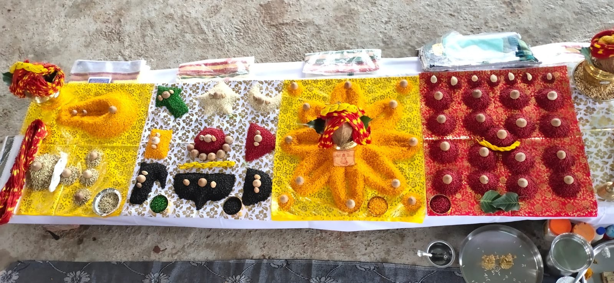
FAQ
You can book various Vedic puja and ritual services including Mahamrityunjaya Jaap, Mangal Dosh Pooja, Pitra Dosh Poojan, Kaal Sarp Dosh Pooja, Navgraha Shanti, Rudrabhishek and other traditional puja services.
In-person puja services are available in Ujjain and selected cities. Online puja services are available across India through live video calls.
Yes. Online puja allows you and your family to participate remotely through a live video call while Pandit Ji performs the rituals according to traditional Vedic practices.
Pandit Ji arranges the required puja samagri for the puja. Specific arrangements may vary depending on the service.
You can book a puja by calling or WhatsApping us, or by submitting a booking enquiry through the website. Your preferred date and time are confirmed separately by the team.
Puja charges depend on the selected service and requirements. Please contact Pandit Ji or the booking team for current pricing.
BEGIN YOUR PUJA JOURNEY
Connect with Pandit Dinesh Krishn Pradhan for traditional Vedic puja and ritual services in Ujjain and selected cities, or join online from anywhere in India.